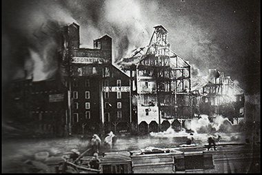
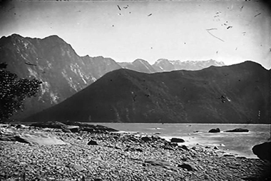
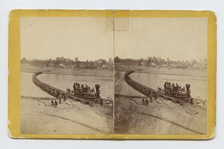
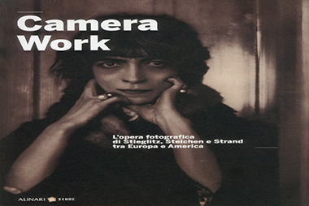
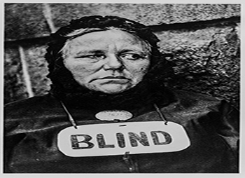

La fotografia nasce il 9 luglio 1839 quando al procedimento fotografico di Louis Jacque Mandè Daguerre (1787- 1851), scenografo e creatore di diorami, viene concesso il brevetto dall'Accademia delle Scienze di Parigi. Il suo socio Joseph Nicéphore Niepce (1765-1833), che già negli anni venti aveva prodotto diverse eliografie, muore prima di vedere questo riconoscimento. Nasce così il Dagherrotipo (1839-1860 ca.): una lastra ricoperta d'argento che, esposta ai vapori dello iodio, messa in camera oscura e posizionata davanti al soggetto da riprendere, dopo una posa lunga e un lavaggio in sale marino e mercurio (per eliminare ogni residuo di ioduro d'argento che potesse continuare a scurirsi), mostra un'immagine dell'oggetto ripreso. Questa tecnica rivoluzionava il mondo del ritratto a quel tempo. Il dagherrotipo è un unicum, da cui impossibile ricavare delle copie.
Più o meno negli stessi anni, in Inghilterra, William Henry Fox Talbot (1801-1877) fa esperimenti trattando fogli di carta con nitrato d'argento e poi applicandoci sopra degli oggetti (foglie, pizzi, etc.) ed esponendoli alla luce; ne derivano immagini negative definite "disegni fotogenici" che vengono lavati in un bagno di fissaggio con sale da cucina. Questi sono usati come negativi, posti a contatto con altri fogli sensibilizzati ed esposti alla luce anche per un paio d'ore. L'uso protratto li rende illeggibili in breve tempo; si deve allo scienziato Sir John F.W. Herschel (1738-1822) l'invenzione del bagno di fissaggio definitivo: l'iposolfito di sodio, usato ancora oggi. Nel 1841 Talbot perfeziona la sua tecnica lasciando esposti alla luce i fogli per poco tempo e "sviluppando" poi, con bagni chimici, l'immagine latente creando i primi negativi su carta: i calotipi , che vengono usati per creare positivi per contatto. Tutta la stampa del periodo avvien per contatto e non per proiezione così il positivo ha sempre le stesse dimensioni del negativo.
La prima carta su cui viene stampata la fotografia è un foglio imbevuto di soluzione salina, detta "carta salata". Essa nel 1850 viene sostituita dalla carta all'albumina inventata da Blanquart-Evrard (1802-1872) usando le chiare d'uovo. Questa carta ha una finitura lucida e compatta e, una volta preparata, può essere conservata per molto tempo prima dell'uso. Nel 1839 lo scozzese Mungo Ponton (1801-1880)inventa la prima tecnica fotografica non argentica e il procedimento sarà fondamentale per la fotoincisione. Questa scoperta permette, nel 1856, a Alphonse-Louis Poitevin (1819-1882) di inventare sia le stampe al carbone che possono essere create in diversi colori in base ai pigmenti usati; sia la tecnica fotomeccanica della collotipia per riprodurre fotografie con inchiostro tipografico. Nel 1851 l'inglese Frederick Scott Archer (1813-1857) inventa il procedimento al collodio umido, un metodo per sensibilizzare lastre di vetro e per fare negativi mescolando i sali d'argento al collodio (fulmicotone). Il collodio diventa una tecnica molto usata fino agli anni Ottanta dell'Ottocento.
Il fotografo inizia a viaggiare e fotografare spedizioni scientifiche, naturalistiche e campagne belliche. Roger Fenton (1829-1869) seguì la guerra in Crimea. Sono soprattutto gli americani che vanno alla scoperta del loro territorio: memorabili le foto di Timothy O'Sullivan (1840-1882) per la Geological Geographical Survey (1873) o quelle di Alexander Gardner (1821-1882) per la costruzione di parte della Union Pacific RailRoad. 
Con la nuova tecnologia al collodio si cominciano a esplorare le città europee e americane nei loro aspetti più poveri. La fotografia inizia ad avere un'importanza capitale come documentazione geografica, etnografica e sociologica. Il suo uso è richiesto dalle amministrazioni locali per testimoniare le condizioni di quartieri e popolazioni in un'ottica di risanamento urbanistico. Migliaia di vedute di monumenti, chiese, palazzi o paesaggi sono scattate col solo scopo della vendita ai turisti. A causa della vendita elevata si fondano delle vere e proprie società editoriali. In Italia le maggiori industrie del genere sono quella fiorentina dei fratelli Alinari (fondata nel 1852) e quella di Giorgio Sommer (1834-1914) a Napoli. Viene usata anche la fotografia stereoscopica, scatti presi da macchine con due obbiettivi che danno l'illusione della tridimensionalità s visti attraverso uno stereoscopio. Questo tipo di fotografia è definita "topografica" per distinguerla da quella che è mossa da finalità estetiche e usata come mezzo di espressione personale.
In Europa e in America, nascono associazioni fotografiche che allestiscono mostre e premi. Al Camera Club di Londra, Peter Henry Emerson (1856- 1936) tiene la conferenza "La Fotografia, arte pittorica" (1886) in cui, pur dichiarando la fotografia superiore al disegno la sottomette alle regole estetiche della pittura che, per lui, corrisponde alla scuola di Barbizon, e colonizza tutta Europa con serie di suoi scatti di paesaggi (Naturalistic Photography), sempre lievemente sfuocati (fluo), in cui la mano del fotografo interviene nella resa estetica del positivo. Emerson, nonostante abbia rinnegato il suo lavoro, condiziona il gusto fotografico dell'epoca dato che le poche fotografie presenti ai Salon vengono scelte da pittori e il valore estetico pittorico è la qualità dominante. Tale caratteristica è esaltata dall'introduzione del procedimento di stampa alla gomma bicromatata che, con esposizioni successive della carta, permette di sovrapporre colori diversi sullo stesso positivo, di lavorare la superficie col pennello e di usare carte colorate o di consistenze ruvide, tanto da poter assimilare alcune stampe ad acquerelli. I fotografi pittorialisti hanno così il mezzo ideale per esprimere la loro artisticità attraverso lo strumento fotografico. Per capire questo fenomeno basta sfogliare alcune riproduzioni pubblicate nella rivista "Camera Work" fondata da Alfred Stieglitz (1864-1946) a New York. Forse per raccontare quanto succede in Europa e in America a cavallo dei due secoli bisogna partire dall'esperienza professionale di Stieglitz, il fotografo che ha condizionato il modo di fare fotografia sui due lati dell'Oceano.
Alfred Stieglitz partecipa al Photographic Salon europeo dove dirige il "Camera Club" di New York, diffondendo i principi del pittorialismo fotografico e, allestendo diverse mostre, dando visibilità a autori emergenti come Edward Steichen (1879-1973)e Alvin Langdon Coburn (1882- 1966). Nel 1902 fonda con altri colleghi sia la Photo-Secession, il cui obbiettivo è far progredire la fotografia come arte pittorica, sia la rivista "Camera Work" (1903- 1917). I membri della Photo-Secession dominano anche la scena europea: nel 1908 al Photographic Salon di Londra sono esposte immagini di autori americani. L'evoluzione di Photo-Secession porta all'affermazione della fotografia come arte a sé, cioè si cominciano ad elogiare fotografie che sembrano fotografie, senza le manipolazioni presenti nelle opere precedenti. Lo scatto fotografico deve essere identificazione di soggetto e forma (Emblematica la fotografia di Stieglitz del 1907, The Steerage ). Nasce la Straight Photography, la "fotografia diretta" che implica riprendere il soggetto in sé e non come accessorio dei sentimenti del fotografo. Stieglitz apre la galleria "291" a New York e per primo espone accanto a fotografie opere di artisti quali Picasso, Picabia, Brancusi, Duchamp. Stieglitz ricerca in modo ossessivo la verità scevra da ogni condizionamento e la trova, alla fine degli anni Venti, nel fotografare le nuvole, da lui definite "Equivalents"; in esse lo spettatore riconosce da un lato il soggetto semplice e banale, ma dall'altro anche una valenza espressiva; la macchina fotografica dota immagini comuni di nuovi significati. 
Sono per lo più i fotografi americani che si dedicano alla purezza del mezzo: Edward Steichen, che dal 1920 rinnega tutta la sua produzione precedente; Paul Strand (1890-1976) pubblica negli ultimi numeri di Camera Work e Edward Weston (1886-1958) rinnega il flou delle sue prime opere per dedicarsi a una messa a fuoco nitida in ogni punto della stampa, essenzialità di visione e ricchezza di dettaglio. Per Weston estetica e tecnica si equivalgono. L'opera di Weston diviene d'ispirazione per molti e nel 1932 viene fondato il gruppo "f/64", la cui regola base è il dogmatismo più severo: la fotografia deve essere a fuoco in ogni particolare, stampata a contatto su carta brillante in bianco e nero. Tra i membri più noti possiamo citare Ansel Adams (1902-1984) che dedica tutta la sua vita all'interpretazione della natura e a dominare le complessità tecniche della riproduzione fotomeccanica.